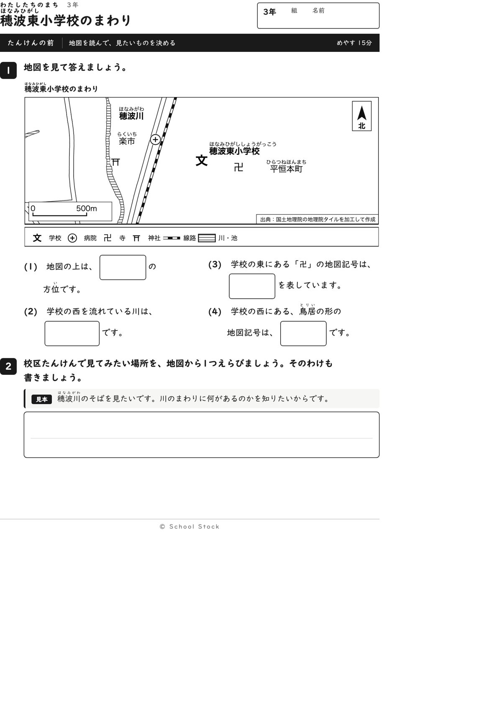
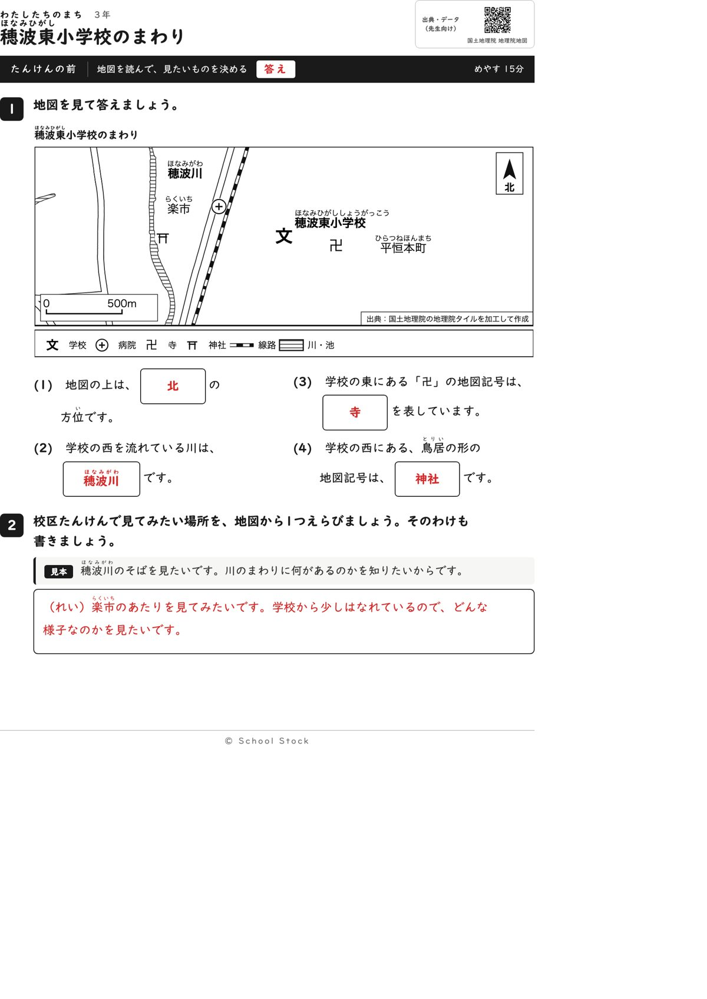
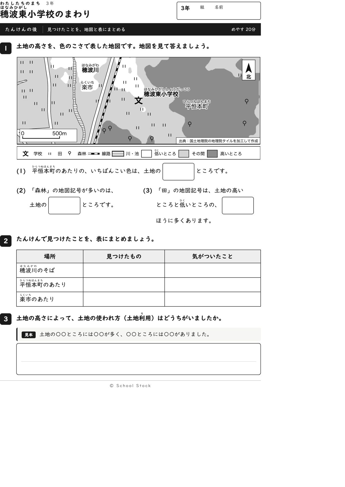
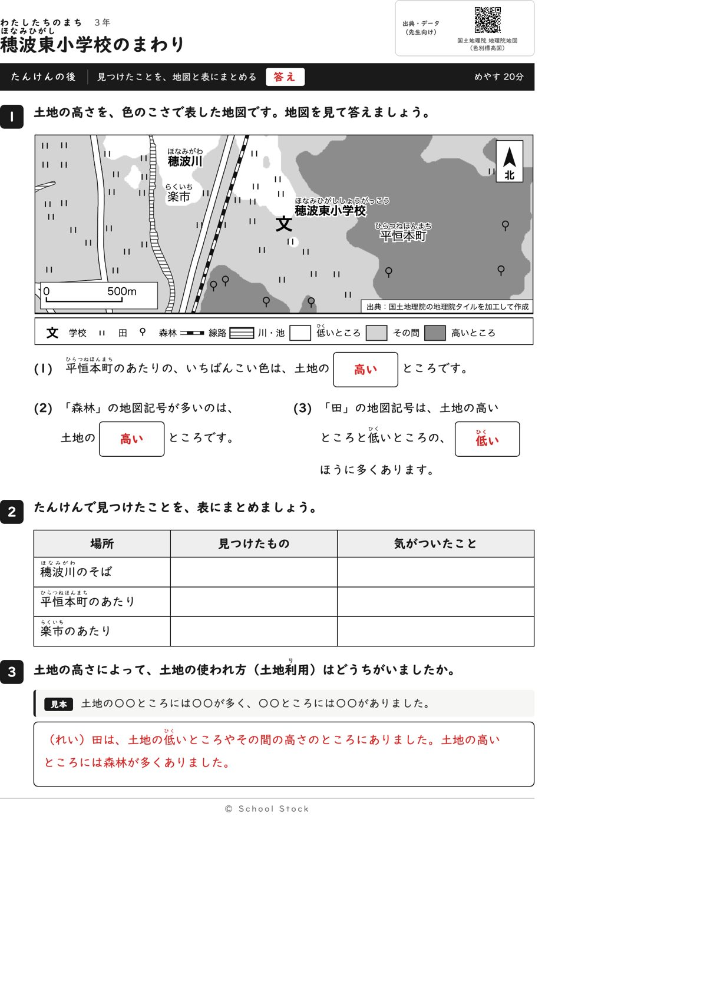
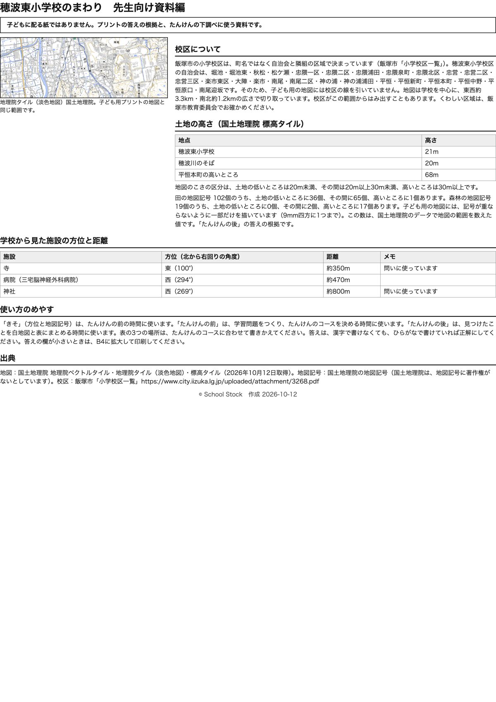

紙





直すところ
直すところはありません。
1回目のレビューで出た直し（1件・道具を直して作り直しました）
| 紙 | どこ | 何が困るか |
|---|---|---|
| 問いは3行以内で、ルビもついています。地図の文字が大きいのも読みやすいです。たんけんの後の(3)は『何の色？』と思って止まるかもしれません。選ぶ形になっていれば手が動きます。 |
専門家団の声（いまの紙を見て）
香月八重筆頭・全学年
三年の順序に合っています。方位を使って地図記号の場所を言う、が1文で言えます。2回目に問題がなかった点はそのまま保たれ、『後』の(3)も二つから選ぶ形のままで動けます。縮尺に白い地が敷かれ、道路の線と混ざらなくなりました。
日隈耕平社会
穂波川は学校の西、卍は東（100度）、鳥居は西（269度）で、資料編の方位と地図の位置が合っています。田102個は低いところ36、その間65、高いところ1、森林19個は高いところ17で、紙の答えと矛盾しません。資料編に『記号は間引いて描いている』と入り、数と地図の記号の数の差が説明されました。方位の答えをほかの問いの文に出す箇所もありません。
藤川湊すぐ終わる子
問いが短く、地図の字を写せば答えが出るので、すぐ終わります。2番の『見てみたい場所』を選ぶ活動があり、あまりません。『後』の(3)は、田の記号がどちらに多いかを数えると面白く感じます。
田淵さくら例がないと止まる子
1番が『上は北』から始まるので、できるところから入れます。2番には見本があるので書き出しで止まりません。表は場所の名前が先に書いてあり、何を書くか分かります。
轟大和読む前に諦める子
設問は3行以内で、配当外の漢字にはふりがながあります。(2)の川の名前は地図の字を写せばよく、読む前に諦めることはなさそうです。答えの箱は大きく、答えが中央に収まっています。